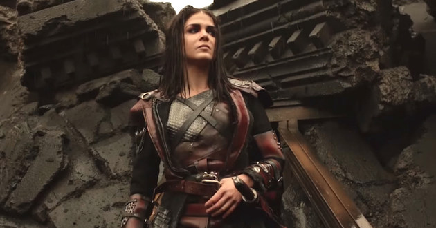

Wonkru
In the fifth season, six years after the meltdown of the nuclear reactors, a prisoner transport ship arrives in the only green spot left on Earth, where Clarke and Madi, a Nightblood Grounder who also survived the wave of radiation that swept the planet after the meltdown, have been living. Those who survived in space and in the bunker have returned safely on the ground. A struggle for the Shallow Valley between the prisoners and a new, united clan, known as Wonkru, begins

Can they begin again and celebrate what remains, or will the frailties of human nature cost them their one chance to rise from the ashes?